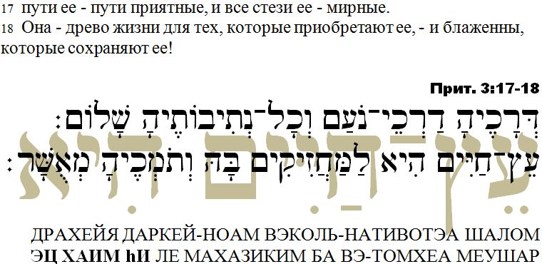
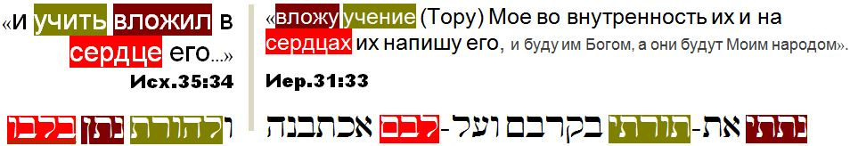
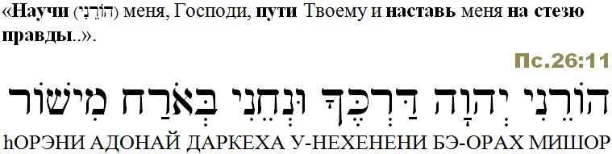

Арт-мидраш · Библия и художник
Художник Бецалель. Сердце учителя
Бецалель не мог не учить, это стало его естественной потребностью, его призванием.
…и способность учить вложил в сердце его…
וּלְהוֹרֹת נָתַן בְּלִבּוֹ
У-ЛЕОРОТ НАТАН БЭ-ЛИБОИсх. 35:34В предыдущих постах «ПРИЗВАНИЕ УЧИТЬ», «РОДИТЕЛЬ» и «Прямое ПОПАДАНИЕ В ЦЕЛЬ» мы начали рассматривать призвание художника Бецалеля - УЧИТЬ, исследуя смысл этого поручения Всевышнего через изучение различных значений ивритского слова «ЛЕОРОТ».
הורה [ ОРЭ ] - родитель
יורה [ ЙОРЭ ] - стрелок
מורה [ МОРЭ ] - учитель
תורה [ ТОРА ] - учение (08451)
О том, как найти в древнееврейском тексте Писания однокоренные слова см. здесь.
Учитель [МОРЭ] - тот, кто наполнен учением, живет тем, чему учит других. Учение - то, чем он дышит, чем живет, его смысл. На иврите УЧЕНИЕ – ТОРА.

Учить - значит сообщать жизнь, а не передавать формальное знание.
Истинный учитель не столько передает информацию, набор правил, текстов, законов, сколько учит жизни.
В этом он уподобляется Богу, природа которого – отдавать, благословлять. Так и учитель. Он делится тем ценным, что составляет сущность его самого, раздавая самого себя.
מורה /МОРЭ/ - УЧИТЕЛЬ – тот, кто учит, сообщая ученику цель. Учение это даёт ему большую силу достичь цели, подобно стреле, выпущенной из лука. МОРЭ – в какой-то мере соединяет в себе родителя и стрелка, придающего направление стреле, (стрела – это ученик)
СОЗВУЧИЯ ЯЗЫКА / ИЛИ ХАСИДСКИЕ ХУДОЖЕСТВА /
Некоторые толкователи уделяют внимание СОЗВУЧИЯМ в иврите. Имеются в виду слова РАЗНЫХ корней, но близких по звучанию. Надо оговориться сразу, что с подобными толкованиями соглашаются далеко не все специалисты. Больше этим занимаются хасиды и художники :) . Так что не обязательно всерьез относиться к выводам из приведенных ниже пар созвучных слов. Если вам угодно, отнеситесь к этому, как к чистому «художеству».
Так близкое по звучанию слову להורות [ ЛЕОРОТ ] - учить, другое слово לִראוֹת [ ЛИРОТ ] – видеть.
Таким образом в этом созвучии можно усмотреть намек на то, что художник Бецалель был призван учить видеть. Ведь это важнейшее из качеств художника – способность видеть (слышать – для музыканта).
В этом же слове להורות [ ЛЕОРОТ ] (учить) можно услышать другое слово, как бы вставленное в него – אורות [ ОРОТ ] – свет во мн.ч. В этом можно видеть другой намек на то, что истинное учение несет в себе свет.
Так учение, вложенное Богом в его сердце, несло в себе свет, источником которого - Творец. См. также родословие художника Бецалеля сына Ури (Ури /ивр./ - Свет Господень).

«ВЛОЖИЛ В СЕРДЦЕ ЕГО...»
(Исх.35:34) «и СПОСОБНОСТЬ УЧИТЬ вложил в сердце его». Так написано в синодальном переводе. В оригинальном тексте (на иврите) нет слова «СПОСОБНОСТЬ», но сказано: "леорот натан бе либо" – «и УЧИТЬ вложил в сердце...».
Понятно, что по-русски так не говорят. Но более благозвучный синодальный перевод закрывает от нас важное возможное толкование.
Имея СПОСОБНОСТЬ, мы можем использовать, а можем и не использовать ее. Так наша способность петь, например, не обязательно влечет за собой занятие пением. Мы можем петь, можем и не петь. Немало людей по тем или иным причинам «закапывают» свои таланты, не считая важным и необходимым их использовать.
О Бецалеле читаем иное: учить – было частью его натуры. Бог вложил это в его сердце, из способностей переведя в разряд потребностей. Бецалель не мог не учить, это стало его естественной потребностью, его призванием.
Интересно, всем известное писание из пророка Иеремии, если читать его на иврите, почти повторяет писание о Бецалеле.
В синод. переводе: «вложу закон Мой» - на иврите: «вложу Мою Тору (учение)».
Нюанс здесь в том, что в случае с Бецалелем Бог вкладывает в его сердце – учить (глагол), а в обетовании Нового Завета речь идет об учении (существительное). Но понятно, - чтобы быть способным учить, прежде художник должен быть научен.

Так что писание о даровании Бецалелю способности учить предвосхищает слова пророка, содержащие обетование всем человекам Нового Завета. Художник Бецалель, таким образом, в себе самом нес великое пророчество грядущим поколениям. Вероятно, это не случайное совпадение, что именно художника Бог одаривает таким образом, подчеркивая важную роль его призвания. Так же, как не случайно после величайшей из заповедей "АНОХИ АДОНАЙ ЭЛОЭХА" (Я Господь Бог твой) следует заповедь о творчестве...
Суть слова להורות [ ЛЕОРОТ ] (учить) поэтически прекрасно выражают слова Давида:

Интересно, что в творчестве Бецалеля Бог соединяет художника и учителя. Божье повеление художнику - учить, указывает на роль и ответственность, возлагаемые Всевышним на человека искусства и его творчество!
Сказано: «и способность учить вложил в сердце его». Речь идёт, о способности, исходящей из его сердца, что указывает на связь с Творцом oна осуществляется сообщением через сердце oсобого вдохновения. Он учил видеть и слышать нечто особенное - он учил слышать Бога, видеть Отца творящим. Он учил художников особому отношению с Творцом.
Мы можем говорить о заповеди Божьей для израильского искусства - служить, неся свет, проповедуя чистоту и святость. (см. об этом в родословии художника «Бецалель - Сын Света»). Художнику дана власть, учить других, через творчество сообщая открывшееся ему откровение.
автор: Эфраим Калиш /TORAART/
ЕСЛИ ЭТОТ МАТЕРИАЛ БЫЛ ВАМ ПОЛЕЗЕН, ПОЖАЛУЙСТА, ПОДЕЛИТЕСЬ ИМ С ДРУЗЬЯМИ
другие статьи по теме:
Школа Бецалеля. ПРИЗВАНИЕ УЧИТЬ Школа Бецалеля. РОДИТЕЛЬ Школа Бецалеля. ПОПАДАНИЕ В ЦЕЛЬ